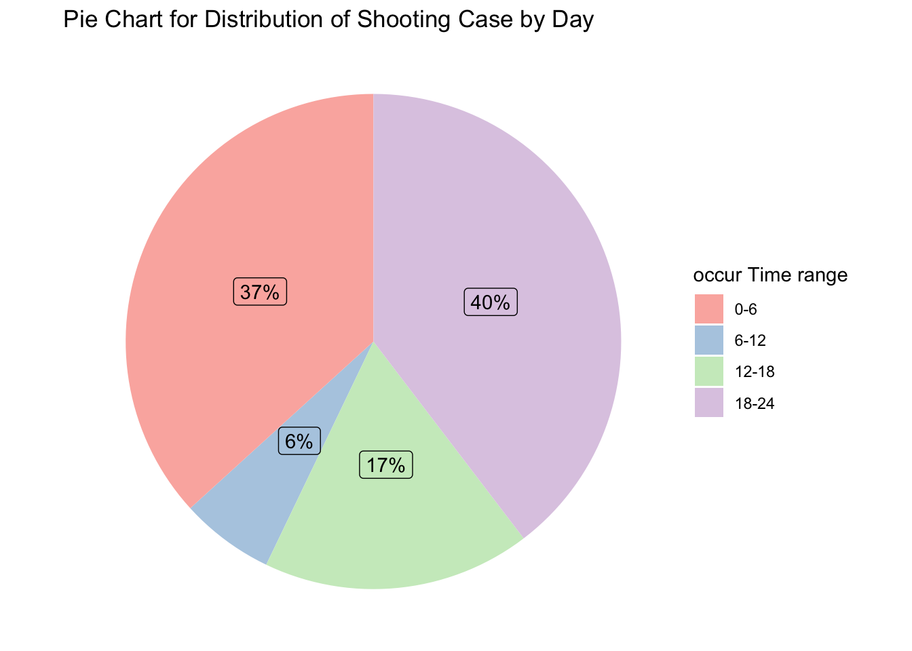
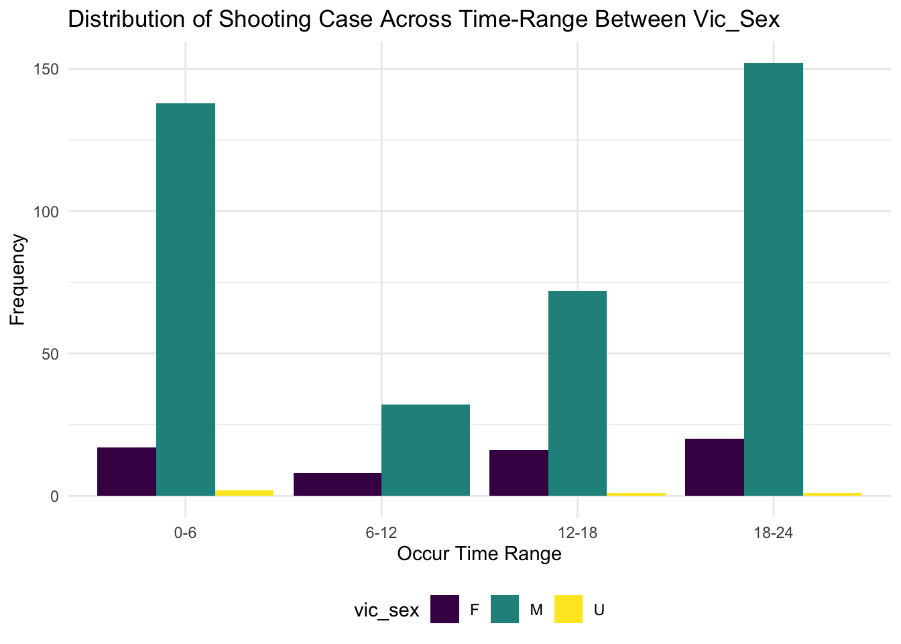

Shooting Incidence Across Time
library(tidyverse)
library(rvest)
library(plotly)
theme_set(theme_minimal() + theme(legend.position = "bottom"))
options(
ggplot2.continuous.colour = "viridis",
ggplot2.continuous.fill = "viridis"
)
scale_colour_discrete = scale_colour_viridis_d
scale_fill_discrete = scale_fill_viridis_dshooting_initial =
read_csv("./data/NYPD_Shooting.csv") %>% janitor::clean_names()
shooting_2021 = read_csv("./data/NYPD_shooting_New.csv") %>% janitor::clean_names()
#A variable name in shooting_new is different from the initial data, change column name in order to merge the data frames
shooting_2021 = shooting_2021 %>%
rename(lon_lat = new_georeferenced_column)
shooting = rbind(shooting_initial, shooting_2021) %>%
mutate(boro = as.factor(boro)) %>%
mutate(location_desc = replace_na(location_desc, "NONE")) %>%
mutate(location_desc = as.factor(location_desc)) %>%
separate(occur_date, into = c("month", "day", "year")) %>%
mutate(month = as.numeric(month)) %>%
arrange(year, month) %>%
# mutate(month = month.name[month]) %>%
mutate(year = as.character(year)) %>%
mutate(boro = tolower(boro)) %>%
mutate(boro = if_else(boro == "staten island", "staten_island", boro)) %>%
rename(borough = boro) %>%
mutate(date = str_c(month, day, year, sep = "/")) %>%
select(incident_key, date, everything())Shooting Incidents Across Time
For the shooting incidents across time, we use three different levels to analyze. Firstly, we compared shooting case year by year. ### Distribution of Shooting Case of Years
shooting_year = shooting %>%
group_by(year) %>%
summarise(n_obs = n())
#visualization shooting incidence trend
shooting_year %>%
plot_ly( x = ~year, y = ~n_obs, type = "scatter", mode = "lines+markers") %>%
layout(title = "Shooting Incidence Trend from 2006 to 2020",
xaxis = list(title = "Year"),
yaxis = list(title = "Frequency"))By observing the data set, the shooting incidence gradually decrease from 2055 cases in 2006 to 967 cases in 2019. However, due to the Covid-19 pandemic and responses to large-scale protests over the killing of George Floyd, there is a sharply surge of shooting incidents in 2020 which have 1948 cases. Since the data for 2021 is only from January to September 30th, we are not sure whether there is a decrease in the year 2021 compared to 2020.
Distribution of Shooting Case of Months
Then we take a look of average shooting cases between months from 2006 to 2021 in the New York City.
shooting_month = shooting %>%
mutate(month = as.factor(month)) %>%
group_by(month) %>%
summarise(n_obs = n())
shooting_month %>%
plot_ly(x = ~month, y = ~n_obs, color = ~month, type = "bar") %>%
layout( title = "The Distribution of Shooting Incidence by Month",
xaxis = list(title = "Month"),
yaxis = list(title = "Frequency"))The distribution of the shooting incidence by month has a bell-shape. The shooting case concentrated in summer from May to September. The reason of this may related to the time of memorial day and the labor day.
Distribution of Shooting Case of Time Range Across day
shooting_time = shooting %>%
##format the occur_time variable to only hours.
mutate(occur_time_hour = format(as.POSIXct(occur_time), format = "%H")) %>%
mutate(occur_time_hour = as.numeric(occur_time_hour)) %>%
group_by(occur_time_hour) %>%
summarise(case_numb = n())
#divide day time to 4 groups: 0-6;6-12;12-18;18-24
shooting_time = shooting_time %>%
mutate(occur_time_range = case_when(
occur_time_hour >= 0 & occur_time_hour < 6 ~ "0-6",
occur_time_hour >= 6 & occur_time_hour < 12 ~ "6-12",
occur_time_hour >= 12 & occur_time_hour < 18 ~ "12-18",
occur_time_hour >= 18 & occur_time_hour < 24 ~ "18-24"))
shooting_time = shooting_time %>%
mutate(occur_time_range = factor(occur_time_range, levels = c("0-6","6-12","12-18","18-24")))
ggplot(shooting_time, aes(x = occur_time_range, y = case_numb, fill = occur_time_range)) + geom_col(alpha = 1) + labs(x = "Occur Time Range",
y = "Frequency",
title = "Distribution of Shooting Case by Day")
#pie chart of ratio of shooting cases in a day
ggplot(shooting_time, aes(x = "", y = case_numb, fill = occur_time_range)) +
geom_bar(width = 1, stat = "identity") +
coord_polar("y", start = 0) +
scale_fill_brewer(palette = "Pastel1") +
theme_void() +
guides(fill = guide_legend(title = "occur Time range")) +
labs(title = "Pie Chart for Distribution of Shooting Case by Day") +
theme(legend.position = "right")
From the bar chart, it is obvious that most of the shooting cases happens in the evening and the late night, which concentrated in 18-24 and 0-6. The pie chart clearly show the occupy of shooting cases time range take place in a day.
Distribution of shooting case across month in 2020
We would like to focus the gun violence in the year of 2020 as a critical year of surge. ### (since the covid-19 starts from March 2020, to see if there any relation between shooting and Covid.)
shooting_2020 = shooting %>%
filter(year == "2020") %>%
mutate(month = as.factor(month)) %>%
group_by(month) %>%
summarise(n_obs = n())
ggplot(shooting_2020, aes(x = month, y = n_obs, fill = month)) + geom_col(alpha = 1) + labs(
x = "Month",
y = "Frequency",
title = "Distribution of Shooting Case across month in 2020 in NYC")
The major rise in gun violence in the city began in 2020, after a period in which violent crime dropped to its lowest levels in more than six decades. For the first half of the year, Gun violence is relatively low as the city shut down early in the pandemic. The spike of shooting cases during June to August, which is mainly because of the death of George Floyd.
Since 2020 is the critical year, we would like to analyze the average shooting case by month between year 2019 and 2020.
shooting_2019_2020 = shooting %>%
filter(year == "2019" | year == "2020") %>%
mutate(month = as.factor(month)) %>%
group_by(year, month) %>%
summarise(frequency = n())
ggplot(shooting_2019_2020, aes(x = month, y = frequency, fill = year)) + geom_bar(stat = "identity", position = position_dodge(), alpha = 0.75) + labs(
x = "Month",
y = "Frequency",
title = "Shooting Case Across Month in NYC in 2019 & 2020")
According to the plot, besides there is year on year to growth between 2019 to 2020, the distribution of shooting case across month are the same.